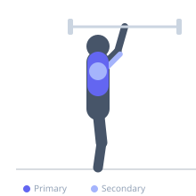

Exercise guide / Spoto Press
Spoto Press
The Spoto Press is a bench press variation where the bar is deliberately stopped one to two inches above the chest rather than touching it. This eliminates the elastic rebound from touching the chest, increasing time under tension at the most mechanically demanding point of the lift and building strength at the sticking point.
Primary muscles
pectoralis major sternal
pectoralis major clavicular
Secondary muscles
deltoid anterior
triceps lateral head
triceps medial head
Stabilizers
subscapularis
supraspinatus
pectoralis minor
Equipment
Standard Barbell
Flat Bench
Optional
Power Rack (Squat Cage)


Starting position
- Lie on a flat bench under a racked barbell. Grip the bar slightly wider than shoulder-width. Unrack and hold the bar at arm's length above the chest.
Setup
- Set the bench in a power rack. Position the bar above the lower chest. Retract and depress the shoulder blades firmly into the bench before unracking.
Steps
- Step 1: Lower the barbell under control toward the lower chest.
- Step 2: Stop the bar 1-2 inches above the chest without allowing it to rest or touch.
- Step 3: Hold the pause for 1-2 seconds while maintaining full tension throughout the chest and arms.
- Step 4: Drive the bar back to the starting position by pressing through the chest and triceps until elbows are fully extended.
Coaching cues
- Pretend the bar has a hot surface you cannot let touch your chest
- Stay tight through the pause — do not relax
- Drive the floor away with your feet to maintain leg drive and body position
Breathing
- Inhale and brace the core before lowering. Hold the breath through the pause. Exhale as you press the bar back up.
Range of motion
- Full elbow extension at the top; stop 1-2 inches off the chest at the bottom. Do not allow the bar to touch or rest on the sternum.
Tempo
- 3-2-1-0 (3s eccentric, 2s pause off-chest, 1s concentric)
Common mistakes
- Letting the bar drift down and briefly rest on the chest, losing the purpose of the variation
- Relaxing tension during the pause instead of maintaining active muscle engagement
- Using too much weight relative to full ROM bench press
Safety
- Use a power rack with safety bars set just below the sticking point
- Start lighter than your full ROM bench press max until the movement pattern is established
Training
- strength: 1–5 reps
- hypertrophy: 5–10 reps
- strength: 3–6 sets
- hypertrophy: 3–5 sets
- Rest: {'strength': 240, 'hypertrophy': 120}